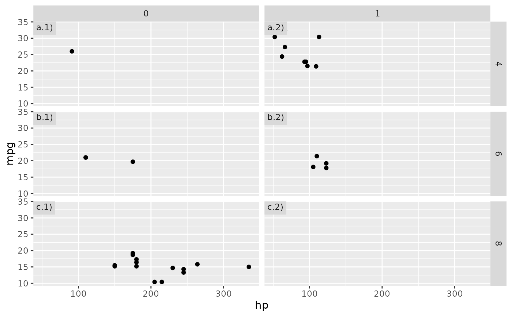
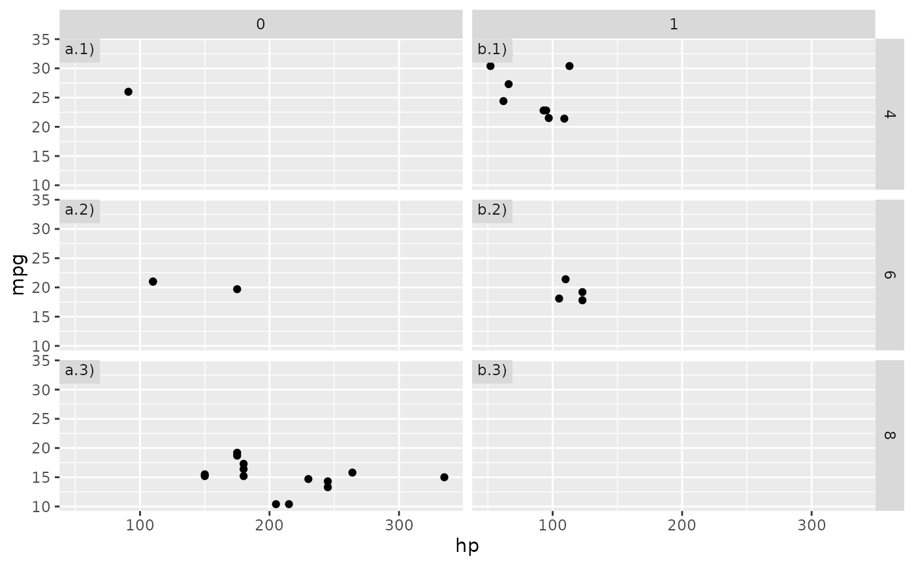
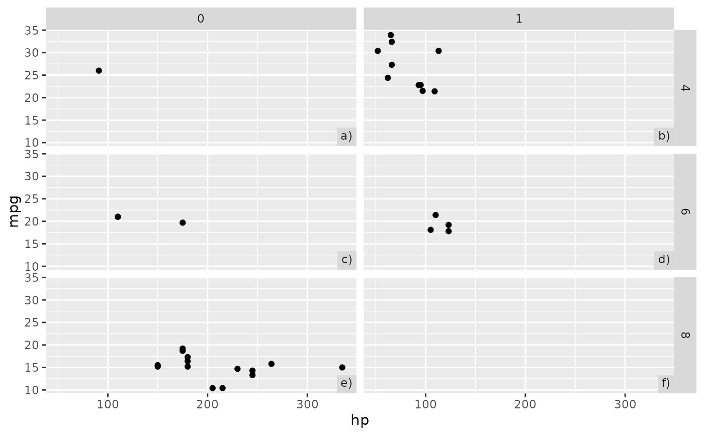
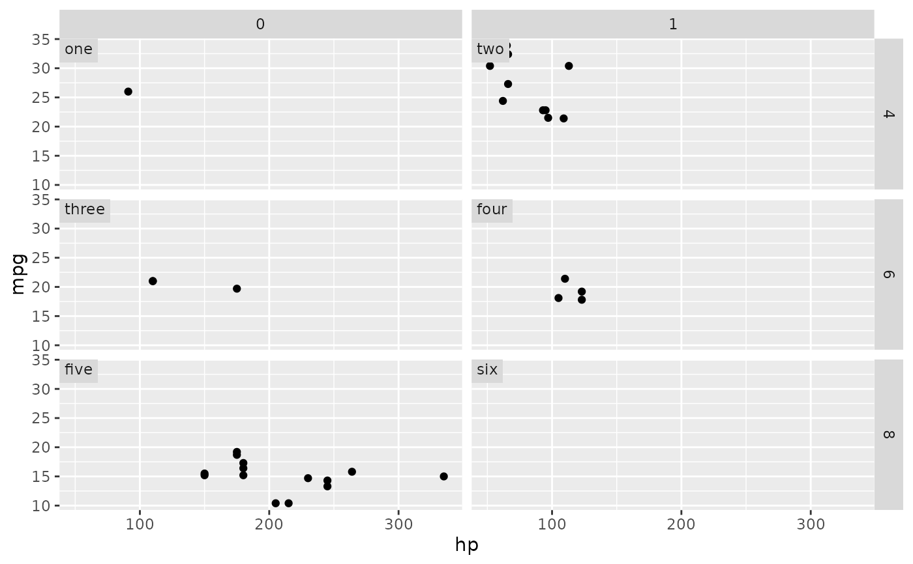
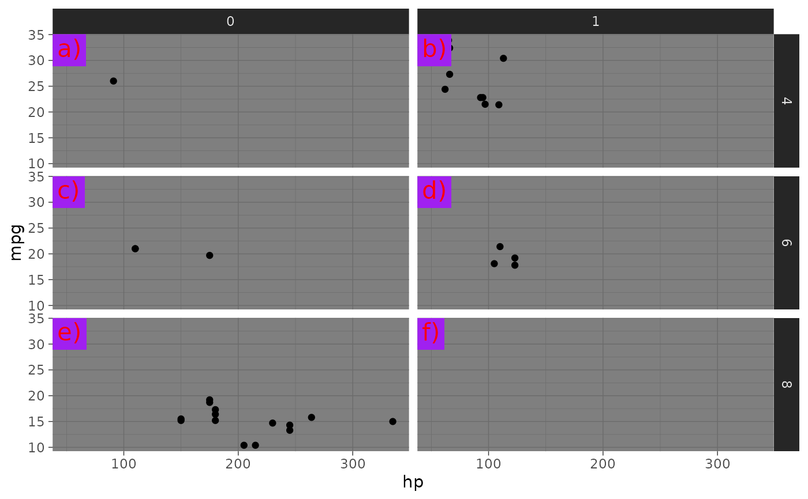

Adds tags to facets
tag_facets.RdAdds tags to facets
Arguments
- tag
Character indicating the element to tag. Possible values are
"panel": each single panels is individually tag.
"rc": facets are tagged by row and then column.
"cr": facets are tagged by columns and then row.
- position
Character indicating the position of the tag. Options are "tl" (top-left), "tr" (top-right), "br" (bottom-right) and "bl" (bottom-left). Alternatively, for finer control, it can be a list of elements "x", "u", "hjust" and "vjust" that define the position of the tag within each panel.
- tag_levels
A character vector defining the enumeration format to use at each level. Possible values are
'a'for lowercase letters,'A'for uppercase letters,'1'for numbers,'i'for lowercase Roman numerals, and'I'for uppercase Roman numerals. It can also be a list containing character vectors defining arbitrary tag sequences. If any element in the list is a scalar and one of'a','A','1','i, or'I', this level will be expanded to the expected sequence.- tag_pool
An optional character vector of user-defined "pool" of tags. If not
NULL, it will be used instead oftag_levels. Should be at least as long as the total number of panels.- tag_prefix, tag_suffix
Strings that should appear before or after the tag.
- tag_sep
A separator between different tag levels
Details
Tags inherit aesthetic properties (size, font, colour, etc...) from strip.text and
strip.background defined by ggplot2::theme(). For fine-grained detail, these can be
overridden by setting tagger.panel.tag.text and tagger.panel.tag.background.
Examples
library(ggplot2)
# Base plot
g <- ggplot(mtcars, aes(hp, mpg)) +
geom_point() +
facet_grid(cyl ~ vs)
g + tag_facets()
g + tag_facets("rc")

g + tag_facets("cr")

g + tag_facets(position = "br")

g + tag_facets("rc", tag_levels = c("A", "I"))
# You can get finer control over position.
g + tag_facets(position = list(x = 0.5, y = 0.5))
g + tag_facets(tag_pool = c("one", "two", "three", "four", "five", "six"), tag_suffix = "")

# Thanks to theme inheritance, tags should look acceptable
# out of the box in any theme.
g + tag_facets() +
theme_dark()
# But you can control their appearance and create your own atrocities
g + tag_facets() +
theme_dark() +
theme(tagger.panel.tag.text = element_text(color = "red", size = 16),
tagger.panel.tag.background = element_rect(fill = "purple"))
